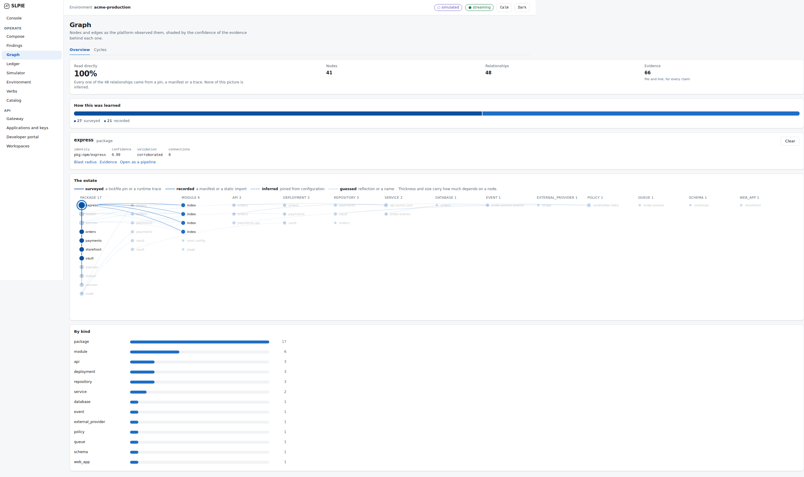
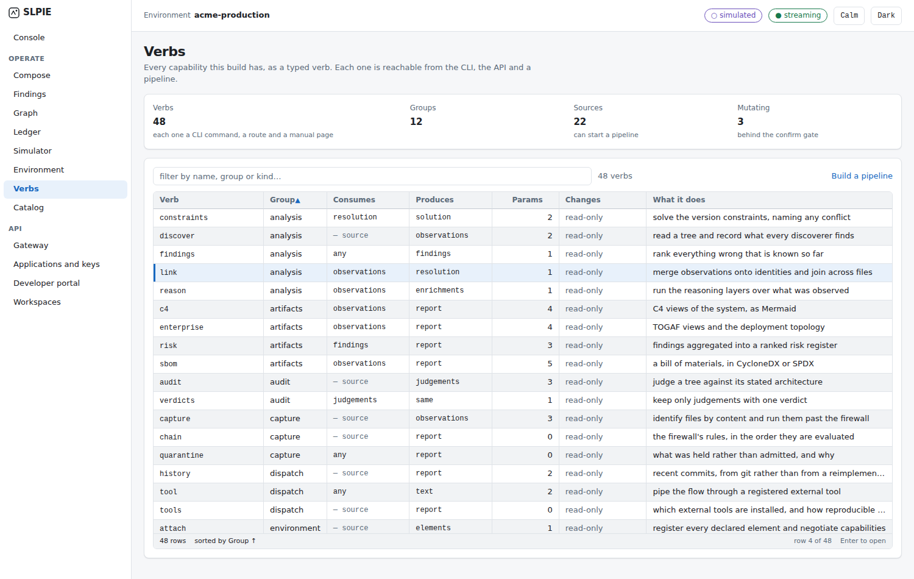
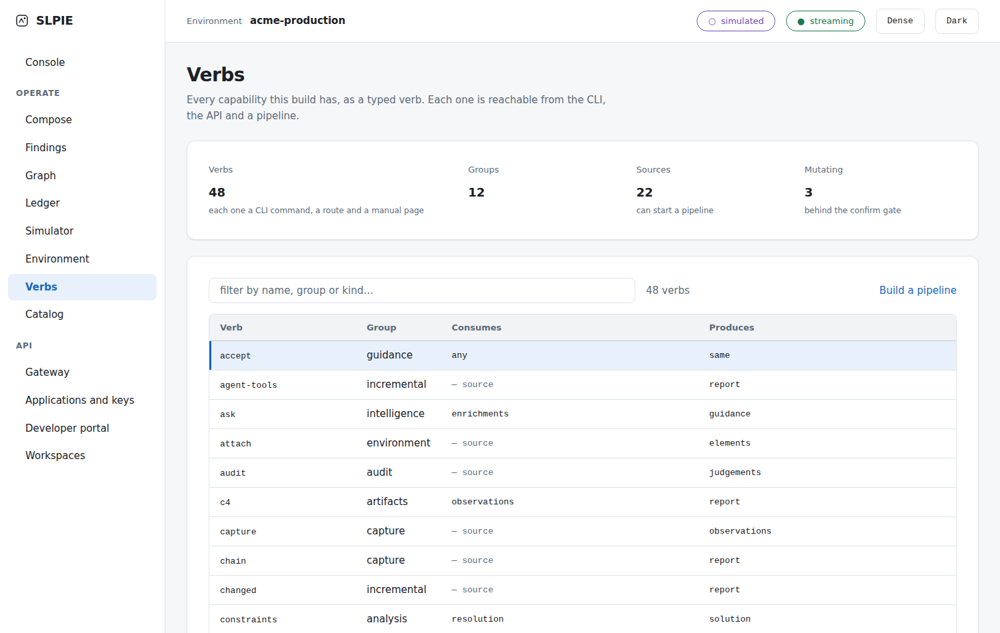

A deterministic breakthrough built on the reasoning of natural language. Piping shell commands is the same act as piping your own contextual words — each one defined as a meaningful software component.
Do this with hardware and a vast body of regulatory standards stands in the way — standards that exist precisely to stop you spending your budget before you have deterministic knowledge. You cannot ship a board because it felt right in a meeting.
Software has no such guard. Anyone can compose anything, discover it was wrong in production, and never learn which step was the mistake.
So we built the guard, and made it teach rather than merely refuse.
We make products that simulate your engagement at the boundary. You come to understand why you fail by composing and piping your own selection of words.
Composing without knowledge is exactly what shows you why your brainstormed pipelines fail — and it points you at deterministic teaching material that supplies the context you were missing, pushing the duty of understanding further rather than answering for you.
You can invent a word. It stays useless until you implement it in detail — exactly as an invented word in a natural language stays useless without mass adoption, capped by the spoken dictionary held in memory and the written one on the page.
So a capability here is not a name. It is a typed verb with a stated input, a stated output, a manual page and a runnable example — and if any of those is missing, the build fails rather than the documentation quietly lying.
Forty-eight verbs. One registry. Five projections of it, and none may disagree.
Most operations surfaces render everything as equally true. This one refuses to: a reviewer has to tell what was read from what was inferred from what was never looked at — at a glance, all day, without reading a number.



It is sequencing order: the continuity a musical sound has, made native to the discrete geometry of natural language.
Notes are not a melody. Words are not a sentence. Verbs are not a pipeline. In all three the elements are finite, ordinary and freely available — and every difference that matters lives in the order they are put in. That problem does not go away when the tooling improves, because it was never a tooling problem.